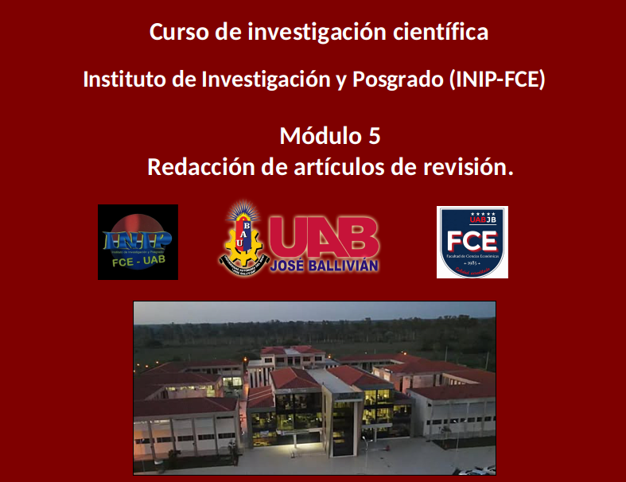
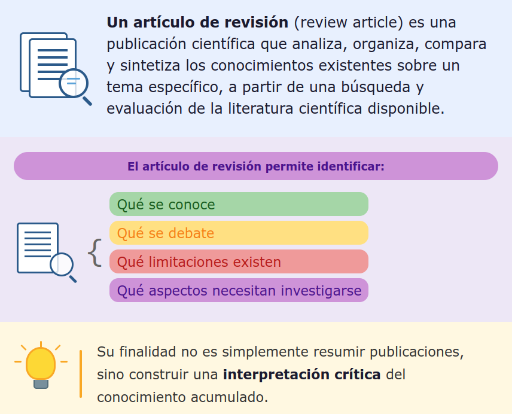
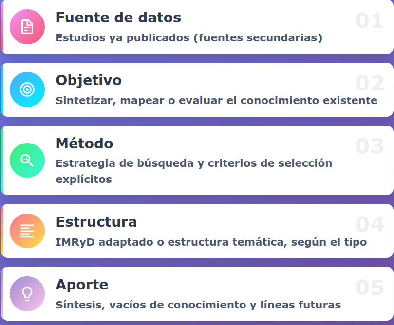
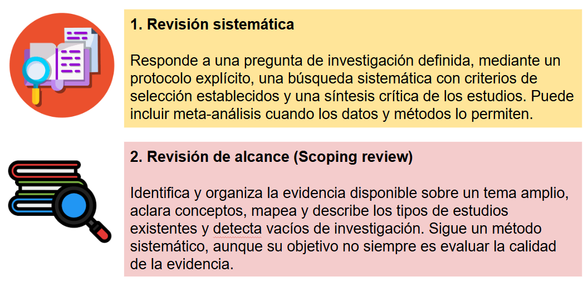
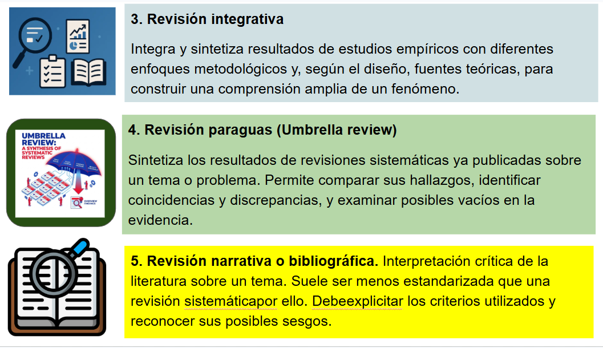

Toca la pantalla o presiona la flecha para comenzar la presentación.


* Sintetizar el conocimiento y reunir los principales hallazgos de investigaciones dispersas.
* Comparar resultados e identificar coincidencias, contradicciones y diferencias entre estudios.
* Evaluar la evidencia y analizar la solidez de los métodos, los datos y las conclusiones de las investigaciones.
* Identificar vacíos de conocimiento y reconocer preguntas que todavía no tienen respuestas suficientes
* Orientar nuevas investigaciones y proponer hipótesis, preguntas y líneas de investigación futuras.
* Apoyar la toma de decisiones al aportar evidencia organizada para el diseño de políticas públicas, estrategias empresariales o intervenciones sociales y ambientales.



Tema: Efectos de las prácticas de gestión de recursos humanos sobre el desempeño de las pequeñas y medianas empresas en el Departamento del Beni.
Pregunta de investigación: ¿Qué efectos tienen las prácticas de gestión de recursos humanos —capacitación, evaluación del desempeño, incentivos y selección de personal— sobre el desempeño financiero y operativo de las pequeñas y medianas empresas en el Beni?
Para llevar a cabo esta revisión sistemática, el investigador debe buscar estudios empíricos que analicen prácticas de recursos humanos y resultados empresariales en PyMES del Beni, consultando en diversas bases de datos de artículos científicos y otras fuentes confiables y seleccionando los más relevantes.
Los estudios seleccionados deben evaluarse en forma crítica, clasificando los resultados y sintetizando los hallazgos, tomando como variables de interés la productividad, rentabilidad, crecimiento de ventas, innovación y desempeño operativo.
Una vez terminada, la revisión permitirá identificar las prácticas asociadas con mejores resultados, la consistencia de la evidencia y las limitaciones de los estudios disponibles.
La revisión de alcance es una síntesis exploratoria que busca identificar y mapear sistemáticamente la amplitud de la evidencia disponible sobre un tema, campo, concepto o problema en particular.
Por tratarse de una revisión exploratoria, no llega a estimar efectos entre variables ni relaciones de causa y efecto, pero permite saber el estado del arte del tema que nos interesa, lo que se ha investigado en diversos contextos, los diferentes conceptos, tendencias, metodologías y debates vigentes, además de detectar vacíos de investigación.
La calidad de una revisión de alcance depende de la información consultada y del cumplimiento de directrices y estándares metodológicos rigurosos para llevar a cabo la investigación y reportar los resultados, asegurando la transparencia, la reproducibilidad y la coherencia entre la pregunta de investigación, los objetivos, métodos y resultados.
Para la investigación se recomienda aplicar las directrices metodológicas de Instituto Joanna Briggs (JBI) y para el reporte se debe cumplir el estándar PRISMA-ScR para revisiones de alcance.
Paso 2: Redacta como segundo paso los Métodos y Materiales, detallando exactamente los pasos que seguiste para obtener los resultados, de tal manera que el estudio sea reproducible.
Paso 3: Escribe la Discusión y Conclusiones: Explica el significado de tus resultados, compáralos con la literatura previa y define las conclusiones y limitaciones.
Paso 4: Escríbe la introducción casi al final del proceso; ahora que sabes exactamente qué descubriste y cómo lo discutiste, puedes plantear con precisión el problema, los antecedentes, la justificación y la contribución esperada del estudio.
Paso 5: Ahora puedes escribir el Resumen, porque constituye una síntesis condensada de todo el trabajo anterior. Solo podrás redactar un buen resumen cuando el artículo entero esté completo y revisado cuidadosamente.
Paso 6: Título y Palabras clave: Refínalos al final para asegurarte de que reflejen con exactitud el contenido definitivo del manuscrito. No olvides verificar que tus referencias bibliográficas sean consistentes y estén actualizadas.